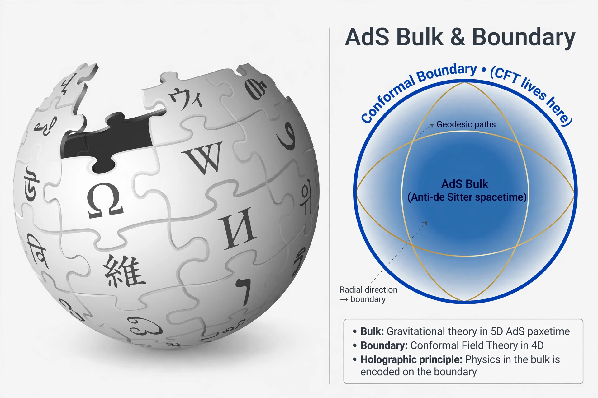

From Wikipedia, the free encyclopedia

This page describes the AdS subpage series: a set of articles treating topics as they relate to anti-de Sitter (AdS) space, a negatively curved spacetime that plays an outsized role in modern theoretical physics because of the AdS/CFT correspondence.
Wikipedia's main article on anti-de Sitter space covers the geometry and the duality in general terms. The subpages in this series expand individual themes — quantum field theory, string theory, M-theory, and black holes in AdS — each written as a short standalone article with links back to the main treatment.